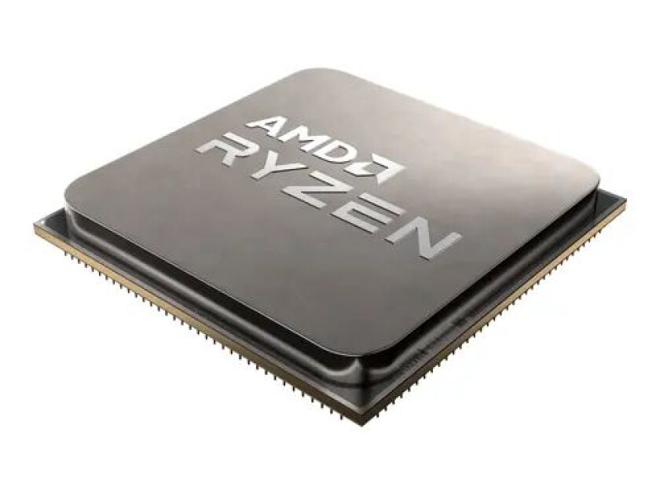
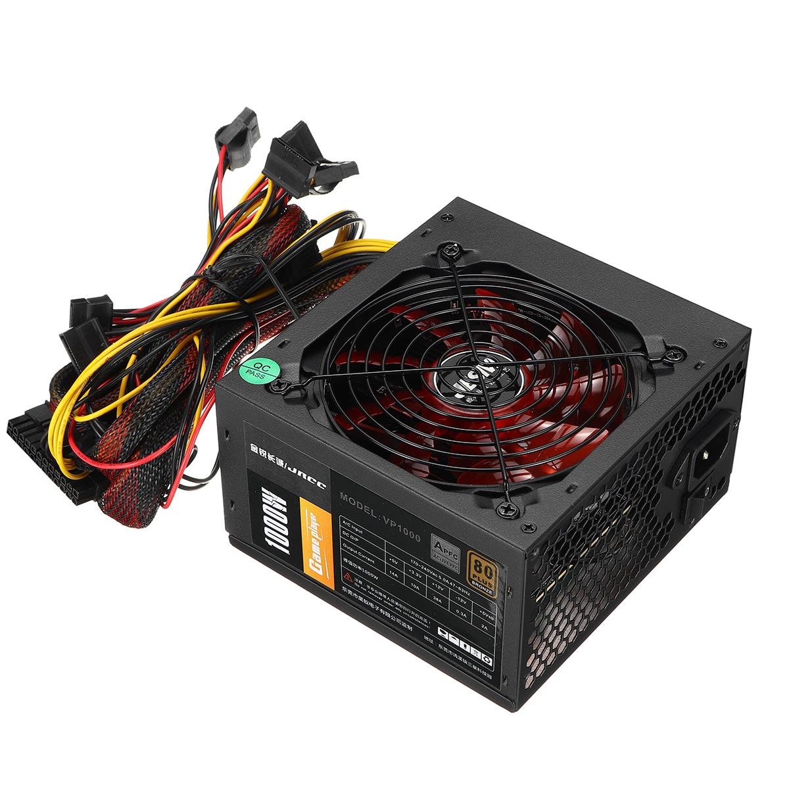
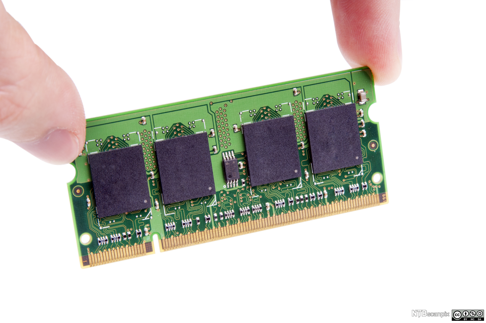
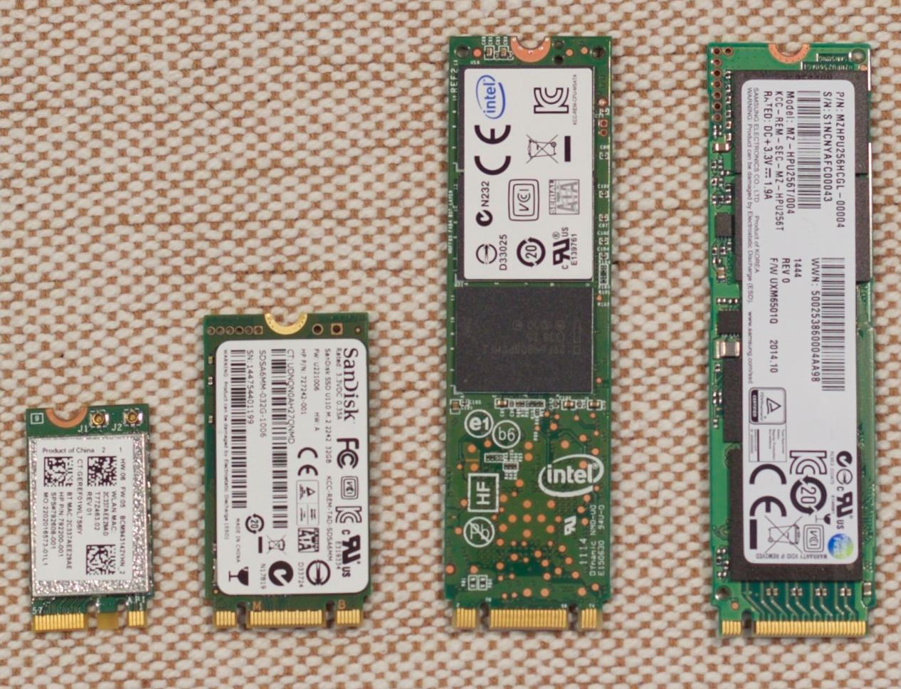

Teknologiforståelse
Hovedkortet

Hovedkortet
Hovedkortet hjelper med å koble alt sammen I datamaskinen.
Hovedkortet har hovedansvar for oppstarten av datamaskinen.
Prossesoren/ cpu

Prossesoren/ cpu
CPU står for Central Processing Unit, og på en måte kan ein sei at den er hjernen til data maskinen
Prosessoren gjør utregningene for programmering menst den får data fra de andre komponentane
Stømforsyining/ PSU

Stømforsyining/ PSU
Strømforsyningen (PSU) hjelper med å overføre de forskjellige voltane til de ulike komponentane
PSU står for Power suply unit, som gir datamaskinen strøm med riktig spenning
Arbeids minne/ RAM

Arbeids minne/ RAM
Arbeids minne (RAM) er mellom minnet for Prosessoren. Det den gjør er å lagra et program sinne koder for et kort øyeblikk til å gi det til prosessoren som kjører koden/e
RAM står for Random access memory
Lagringsenhetene
